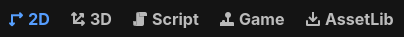
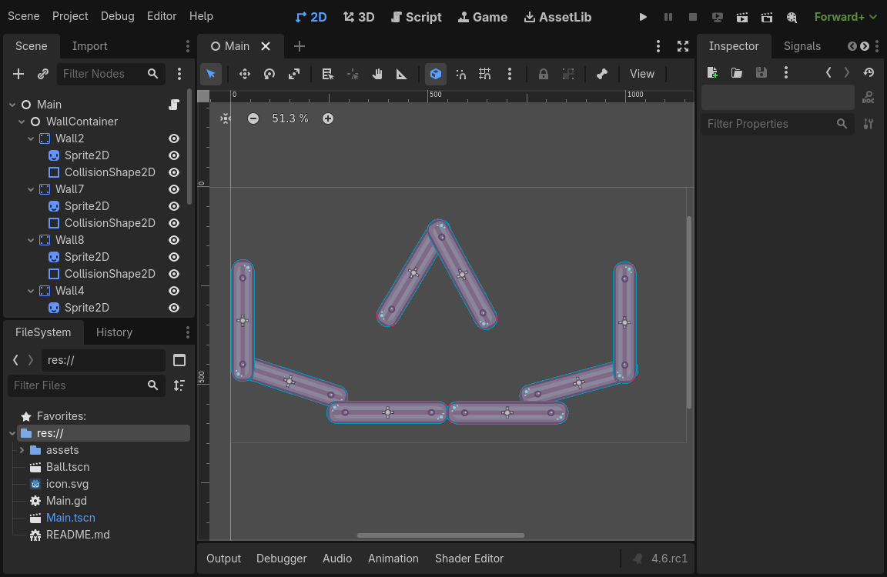
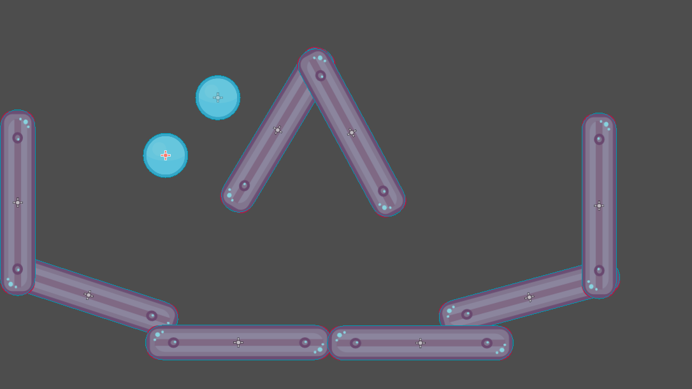
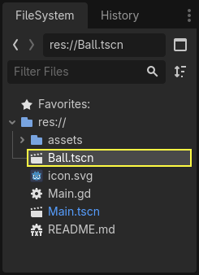
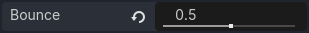
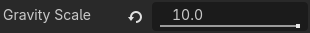
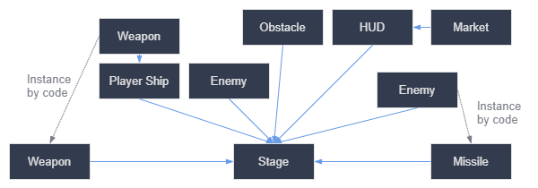
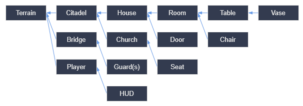

Tạo instance
Ghi chú
Bài hướng dẫn này nói về việc tạo instance cho scene trong trình chỉnh sửa. Để học cách tạo instance cho scene bằng code, hãy xem Node và instance của scene.
Không nên nhầm lẫn cách tiếp cận instancing của Godot được mô tả dưới đây với hardware instancing, kỹ thuật có thể dùng để kết xuất nhanh một lượng lớn đối tượng tương tự nhau. Hãy xem Tối ưu bằng MultiMesh để biết về kỹ thuật đó.
Ở phần trước, chúng ta đã thấy một scene là tập hợp các node được tổ chức theo cấu trúc cây, với một node duy nhất làm gốc. Bạn có thể chia dự án thành bao nhiêu scene tùy ý. Tính năng này giúp bạn chia nhỏ và tổ chức các thành phần khác nhau của game.
Bạn có thể tạo bao nhiêu scene tùy thích và lưu chúng thành file với phần mở rộng .tscn, viết tắt của "text scene". File label.tscn từ bài học trước là một ví dụ. Chúng ta gọi các file đó là "Packed Scene" vì chúng đóng gói thông tin về nội dung của scene.
Đây là ví dụ về một quả bóng. Nó gồm một node RigidBody2D làm gốc tên là Ball, cho phép quả bóng rơi và nảy vào tường, một node Sprite2D và một CollisionShape2D.

Sau khi bạn lưu một scene, nó hoạt động như một bản thiết kế: bạn có thể tái tạo nó trong các scene khác bao nhiêu lần tùy thích. Việc nhân bản một đối tượng từ một khuôn mẫu như vậy được gọi là instancing (tạo instance).

Như đã đề cập ở phần trước, các scene được tạo instance hoạt động như một node: trình chỉnh sửa mặc định ẩn nội dung của chúng. Khi bạn tạo instance cho Ball, bạn chỉ thấy node Ball. Hãy để ý rằng mỗi bản sao đều có một tên riêng.
Mỗi instance của scene Ball đều bắt đầu với cùng cấu trúc và thuộc tính như ball.tscn. Tuy nhiên, bạn có thể chỉnh sửa từng cái một cách độc lập, chẳng hạn thay đổi cách chúng nảy, độ nặng của chúng, hoặc bất kỳ thuộc tính nào được scene gốc công khai.
Thực hành
Hãy thực hành instancing để xem nó hoạt động thế nào trong Godot. Mời bạn tải dự án mẫu quả bóng mà chúng tôi đã chuẩn bị: instancing_starter.zip.
Giải nén tệp nén trên máy tính của bạn. Để import nó, bạn cần Project Manager. Bạn có thể truy cập Project Manager bằng cách mở Godot, hoặc nếu đã mở Godot, hãy nhấp vào (Ctrl + Shift + Q, Ctrl + Option + Cmd + Q trên macOS)
Trong Project Manager, nhấp nút để import dự án.

Trong cửa sổ bật lên, hãy điều hướng đến thư mục bạn đã giải nén. Nhấp đúp vào tệp project.godot để mở nó.

Cuối cùng, nhấp nút .

Có thể xuất hiện một cửa sổ thông báo rằng dự án được mở lần cuối bằng phiên bản Godot cũ hơn. Điều đó không thành vấn đề. Nhấp để mở dự án.
Dự án chứa hai packed scene: main.tscn, chứa các bức tường mà quả bóng va chạm vào, và ball.tscn. Scene Main sẽ tự động mở. Nếu bạn thấy một scene 3D trống thay vì scene chính, hãy nhấp nút 2D ở phía trên màn hình.


Hãy thêm một quả bóng làm con của node Main. Trong dock Scene, chọn node Main. Sau đó, nhấp vào biểu tượng liên kết ở trên cùng dock scene. Nút này cho phép bạn thêm một instance của scene làm con của node đang được chọn.

Nhấp đúp vào scene quả bóng để tạo instance cho nó.

Quả bóng xuất hiện ở góc trên bên trái của viewport.

Nhấp vào nó và kéo về phía giữa khung nhìn.

Chạy game bằng cách nhấn F5 (Cmd + B trên macOS). Bạn sẽ thấy nó rơi xuống.
Bây giờ, chúng ta muốn tạo thêm instance của node Ball. Khi quả bóng vẫn đang được chọn, nhấn Ctrl + D (Cmd + D trên macOS) để gọi lệnh nhân bản. Nhấp và kéo để di chuyển quả bóng mới sang vị trí khác.

Bạn có thể lặp lại quá trình này cho đến khi có nhiều quả bóng trong scene.

Chạy lại game. Giờ bạn sẽ thấy từng quả bóng rơi độc lập với nhau. Đây chính là điều mà instance làm được. Mỗi instance là một bản sao độc lập của một scene mẫu.
Chỉnh sửa scene và instance
Instance còn nhiều điều hơn thế. Với tính năng này, bạn có thể:
Thay đổi thuộc tính của một quả bóng mà không ảnh hưởng đến các quả khác bằng Inspector.
Thay đổi thuộc tính mặc định của mọi Ball bằng cách mở scene
ball.tscnvà chỉnh sửa node Ball ở đó. Khi lưu, tất cả instance của Ball trong dự án sẽ được cập nhật giá trị.
Ghi chú
Thay đổi một thuộc tính trên instance luôn ghi đè giá trị từ packed scene tương ứng.
Hãy thử điều này. Nhấp đúp vào ball.tscn trong FileSystem để mở nó.

Trong dock Scene ở bên trái, chọn node Ball. Sau đó, trong Inspector ở bên phải, nhấp vào thuộc tính PhysicsMaterial để mở rộng nó.

Đặt thuộc tính Bounce của nó thành 0.5 bằng cách nhấp vào ô số, gõ 0.5 rồi nhấn Enter.

Chạy game bằng cách nhấn F5 (Cmd + B trên macOS) và để ý rằng tất cả quả bóng giờ nảy cao hơn nhiều. Vì scene Ball là mẫu cho mọi instance, việc chỉnh sửa và lưu nó sẽ khiến tất cả instance được cập nhật theo.
Bây giờ hãy điều chỉnh một instance riêng lẻ. Quay lại scene Main bằng cách nhấp vào tab tương ứng phía trên viewport.

Chọn một trong các node Ball đã được tạo instance và, trong Inspector, đặt giá trị Gravity Scale của nó thành 10.

Một nút "khôi phục" màu xám xuất hiện bên cạnh thuộc tính đã điều chỉnh.
Biểu tượng này cho biết bạn đang ghi đè một giá trị từ packed scene gốc. Ngay cả khi bạn sửa thuộc tính trong scene gốc, giá trị ghi đè vẫn được giữ lại trong instance. Nhấp vào biểu tượng hoàn tác sẽ khôi phục thuộc tính về giá trị trong scene đã lưu.
Chạy lại game và để ý rằng quả bóng này giờ rơi nhanh hơn nhiều so với những quả khác.
Ghi chú
Bạn có thể nhận thấy mình không thể thay đổi các giá trị của PhysicsMaterial của quả bóng. Đó là vì PhysicsMaterial là một resource, và cần được làm cho duy nhất (unique) trước khi bạn có thể chỉnh sửa nó trong một scene đang liên kết với scene gốc của nó. Để làm cho một resource trở nên duy nhất cho một instance, hãy nhấp chuột phải vào thuộc tính Physics Material trong Inspector và nhấp trong menu ngữ cảnh.
Resource là một khối xây dựng thiết yếu khác của game Godot mà chúng ta sẽ đề cập trong một bài học sau.
Instance của scene như một ngôn ngữ thiết kế
Instance và scene trong Godot mang đến một ngôn ngữ thiết kế tuyệt vời, giúp engine khác biệt so với các engine khác. Chúng tôi đã thiết kế Godot xoay quanh khái niệm này ngay từ đầu.
Chúng tôi khuyên bạn nên bỏ qua các mẫu kiến trúc code khi làm game với Godot, chẳng hạn Model-View-Controller (MVC) hay sơ đồ Entity-Relationship. Thay vào đó, bạn có thể bắt đầu bằng cách hình dung các thành phần mà người chơi sẽ thấy trong game và tổ chức code xoay quanh chúng.
Ví dụ, bạn có thể chia nhỏ một game bắn súng như sau:

Bạn có thể vẽ ra một sơ đồ như thế này cho hầu hết mọi loại game. Mỗi hình chữ nhật đại diện cho một thực thể hiển thị trong game từ góc nhìn của người chơi. Các mũi tên chỉ về phía nơi tạo instance cho mỗi scene.
Khi đã có sơ đồ, chúng tôi khuyên bạn nên tạo một scene cho mỗi thành phần được liệt kê trong đó để phát triển game. Bạn sẽ dùng instancing, bằng code hoặc trực tiếp trong trình chỉnh sửa, để xây dựng cây scene của mình.
Lập trình viên thường tốn nhiều thời gian để thiết kế các kiến trúc trừu tượng rồi cố gắng nhét các thành phần vào đó. Thiết kế dựa trên scene giúp việc phát triển nhanh hơn và đơn giản hơn, cho phép bạn tập trung vào chính logic của game. Vì hầu hết các thành phần game đều tương ứng trực tiếp với một scene, việc dùng thiết kế dựa trên tạo instance scene có nghĩa là bạn cần rất ít code kiến trúc khác.
Đây là ví dụ về sơ đồ scene cho một game thế giới mở với vô số asset và các thành phần lồng nhau:

Hãy tưởng tượng chúng ta bắt đầu bằng việc tạo căn phòng. Chúng ta có thể làm vài scene phòng khác nhau, mỗi scene có cách bày trí đồ nội thất riêng. Sau đó, chúng ta có thể làm một scene ngôi nhà dùng nhiều instance phòng cho phần nội thất. Chúng ta sẽ tạo một thành trì từ nhiều ngôi nhà được tạo instance và một vùng địa hình rộng lớn để đặt thành trì lên đó. Mỗi thứ trong số này sẽ là một scene tạo instance cho một hoặc nhiều scene con.
Sau đó, chúng ta có thể tạo các scene đại diện cho lính canh và thêm chúng vào thành trì. Chúng sẽ được gián tiếp thêm vào thế giới game tổng thể.
Với Godot, việc lặp đi lặp lại cải tiến game như thế này rất dễ dàng, vì tất cả những gì bạn cần làm là tạo và tạo instance thêm các scene. Chúng tôi thiết kế trình chỉnh sửa để lập trình viên, nhà thiết kế và họa sĩ đều dễ tiếp cận. Một quy trình phát triển nhóm điển hình có thể gồm họa sĩ 2D hoặc 3D, nhà thiết kế màn chơi, nhà thiết kế game và họa sĩ hoạt ảnh, tất cả cùng làm việc với trình chỉnh sửa Godot.
Tóm tắt
Instancing, quá trình tạo ra một đối tượng từ một bản thiết kế, có nhiều công dụng hữu ích. Với scene, nó mang lại cho bạn:
Khả năng chia game thành các thành phần có thể tái sử dụng.
Một công cụ để tổ chức và đóng gói các hệ thống phức tạp.
Một ngôn ngữ để suy nghĩ về cấu trúc dự án game một cách tự nhiên.